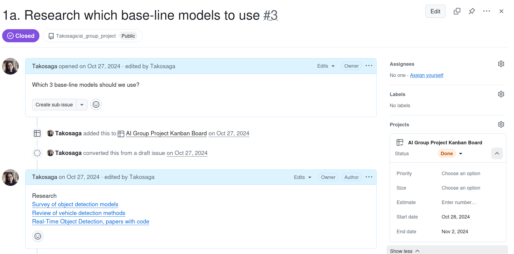

Image Recognition to Detect Different Vehicle Types in Riga
Project Manager overseeing YOLOv8 vehicle detection
About
This role involved leading a small team through an 8-week AI group project lifecycle focused on vehicle classification using YOLOv8. As Project Manager, I was responsible for establishing effective communication channels, maintaining comprehensive documentation, implementing agile practices including sprint planning and progress tracking, and facilitating collaboration among the 3-member team: Data Engineer (Dmitrijs), Data Analyst (Eden), and myself as Project Manager.
Team Management & Coordination
- Proposal & Task Planning: Created project proposal and defined milestone-based task breakdown for team collaboration.
- Team Coordination & Communication: Established and maintained clear communication protocols across distributed team members using collaborative platforms
- Documentation & Knowledge Sharing: Created and maintained comprehensive project documentation ensuring knowledge transfer and team alignment
- Sprint Planning & Progress Tracking: Implemented iterative development cycles with regular planning sessions and progress reviews to maintain momentum
- Task Assignment & Follow-up: Managed task distribution and accountability through transparent tracking systems across Data Engineer, Data Analyst, and Project Manager roles
Tech Stack and Management
GitHub Projects
Kanban
Team Leadership
YOLOv8
CVAT
Links
Visualizations
